سرصفحه فروشگاه
صفحه ۱۵۶
محتوای عناصر پاراگراف را بر اساس تصویر زیر تکمیل نمایید. برای نمایش کلمات بهصورت ضخیم (bold)، از تگ مناسب استفاده کنید فایل را ذخیره و نتیجه را در مرورگر بررسی کنید.
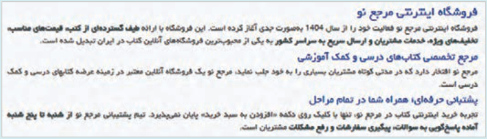
برای اصلاح نمای موبایل، کلاس w-75 را از عنصر article حذف کنید و استایل مربوط به آن را به فایل styles.css اضافه کنید:
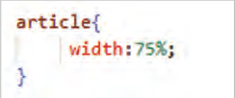
برای دستگاههایی با پهنای کمتر از 600 پیکسل قانون زیر را در فایل styles.css اضافه کنید:
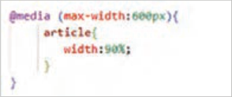
بیشتر بدانید
طراحی نوار ابزار حاوی لوگو، کادر جستوجو، گزینههای ورود | ثبت نام و سبد خرید در این کارگاه ناحیهای مشابه تصویر زیر را در بالای نوار منو ایجاد خواهید کرد:
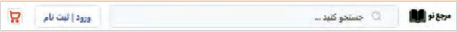
یک لوگو با ارتفاع 70 پیکسل ایجاد کنید و سپس فایل تصویر را با نام logo.jpg در پوشه images سایت ذخیره نمایید.
درون کادر جستوجو باید یک آیکن جستوجو ظاهر شود. برای دانلود آیکن جستوجو از سایت svgrepo.com استفاده کنید و عبارت search را در آن جستوجو کنید. آیکن دلخواه خود را توسط دکمه Edit vector در کوچکترین اندازه و رنگ دلخواه تنظیم کرده و سپس روی دکمه Export کلیک کنید. فایل آیکن را با نام search.svg در پوشه تصاویر سایت (images) ذخیره نمایید.
صفحه ۱۵۷
تصویر صفحۀ قبل حاوی لوگو، کادر جستوجو (شامل آیکن جستوجو و کادر متنی)، گزینه ورود| ثبتنام و سبد خرید است. این عناصر را به شکل زیر به صفحه index.html قبل از عنصر nav اضافه کنید:
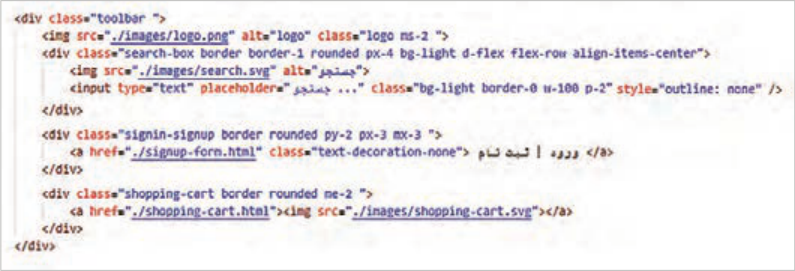
استایل عناصر را در نمای دسکتاپ به شکل زیر تنظیم کنید:
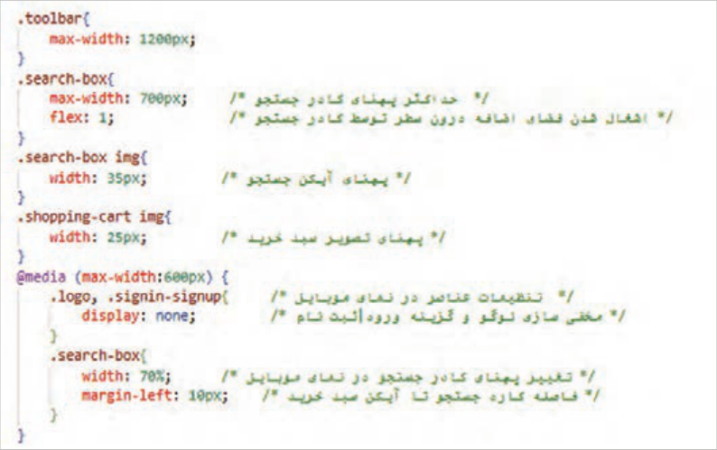
کلاسهای زیر را به عنصر toolbar اضافه کنید. سپس فایل را ذخیره کرده و نتیجه را در مرورگر بررسی نمایید.
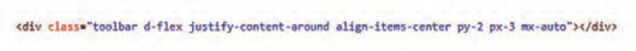
صفحه ۱۵۸
با تنظیمات CSS فوق، گزینه «ورود|ثبتنام» و لوگو از نمای موبایل حذف میشود، بنابراین این گزینهها باید در جای دیگری نمایش داده شود. بهتر است این گزینهها بهصورت یک لایۀ ثابت در پایین صفحه نمایش داده شوند. بدین منظور کد زیر را قبل از <main/> وارد کنید:
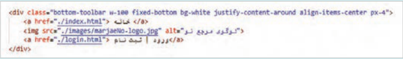
کلاس fixed-bottom لایه bottom-toolbar را در پایین صفحه ثابت نگه میدارد.
استایل زیر را برای عنصر bottom-toolbar بنویسید:
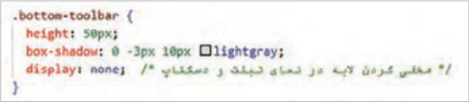
استایل زیر را برای نمایش صحیح نوار ابزار در نمای موبایل اضافه کنید:
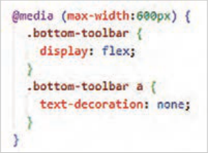
با این تنظیمات عنصر bottom-toolbar بهصورت شکل زیر در پایین دستگاه موبایل ظاهر میشود.
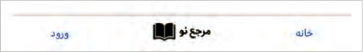
برای فاصله گرفتن منو از toolbar، از کلاس mt-3 در برچسب <nav> استفاده کنید.
با توجه به اینکه گزینههای ورود|ثبت نام و سبد خرید به بخش toolbar اضافه شده است، بنابراین عنصر user-actions را از منوی ناوبری (عنصر top-menu) حذف کنید. سپس استایلهای مربوط به آن را از فایل styles.css حذف کنید. با حذف شدن ناحیه user-action نیازی به ویژگیهای فلکس در کلاس .top-menu نیست. پس ویژگیهای فلکس را هم حذف کنید. در انتها آنچه درون کلاس top-menu باقی میماند ویژگی max-width خواهد بود.
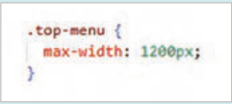
صفحه ۱۵۹
بهتر است که گزینههای منو در راستای افقی در وسط صفحه توزیع شوند، برای این کار از کلاس -justify content-center در عنصر ul استفاده کنید:
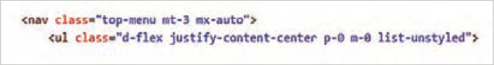
توسط کد فوق تمام ویژگیهای انتخابگر .top-menu ul با کلاسهای بوتاسترپ معادل جایگزین شد. بنابراین ویژگیهای درون انتخابگر .top-menu ul را از فایل styles.css حذف کنید.
انتظار میرود که با تنظمیات فوق نتیجه زیر حاصل شود:
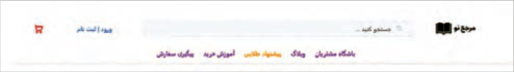
سفارشیسازی کلاسهای بوت استرپ کلاسهای بوتاسترپ دارای ویژگیها و مقادیر از پیش تعیین شدهای هستند که امکان طراحی سریع عناصر صفحه را فراهم میکنند. گاهی لازم است که عملکرد این کلاسها توسط توسعهدهندۀ صفحات تغییر نماید.
این کار توسط CSS و SASS١ امکانپذیر است. برای تغییر استایل یک کلاس توسط CSS لازم است که ویژگی کلاس مورد نظر با مقادیر جدید تنظیم شود. در حالت پیشفرض اعمال کلاس بوتاسترپ دارای اولویت بالاتری است. بنابراین برای بالا بردن اهمیت کلاس سفارشی باید از کلمه important ! در انتهای مقدار جدید استفاده شود، در غیر اینصورت مقدار جدید اعمال نمیشود.
تغییر استایل کلاس رنگ بوتاسترپ
کار کارگاهی
در این کارگاه رنگ کلاس bg-light را در فایل index.html تغییرخواهید داد. بدین منظور استایل زیر را برای کلاس bg-light به شکل زیر بنویسید:
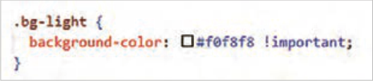
الحاق فایل styles.css باید بعد از الحاق فایل bootstrap.min.css انجام شود، در غیر اینصورت اولویت اجرا با تنظیمات پیش فرض کلاس بوت استرپ خواهد بود. کلاس bg-light در دو عنصر کادر جستوجو و article مورد استفاده قرار گرفته است. بعد از ذخیرهسازی کد فوق بررسی کنید که آیا تغییر رنگ در این دو عنصر اعمال شده است یا خیر.
١ ابزاری است که نوشتن، سازماندهی و نگهداری کدهای CSS را در پروژههای وب سادهتر و حرفهایتر میکند.
Page 156
Complete the content of the paragraph elements based on the image below. To display words in bold (bold), use the appropriate tag. Save the file and check the result in the browser.
To fix the mobile view, remove the class w-75 from the article element and add the related style to the file styles.css:
For devices with a width less than 600 pixels, add the following rule to the file styles.css:
Learn more
Designing a toolbar that contains a logo, a search box, Sign in | Register options, and a shopping cart In this workshop you will create an area similar to the image below above the menu bar:
Create a logo with a height of 70 pixels and then save the image file with the name logo.jpg in the site’s images folder.
A search icon should appear inside the search box. To download a search icon, use the site svgrepo.com and search for the word search on it. Adjust your preferred icon with the Edit vector button at the smallest size and preferred color, then click the Export button. Save the icon file with the name search.svg in the site’s images folder (images).
Page 157
The image on the previous page contains a logo, a search box (including a search icon and a text box), a Sign in | Register option, and a shopping cart. Add these elements as shown below to the page index.html before the nav element:
Set the styles of the elements in the desktop view as follows:
Add the following classes to the toolbar element. Then save the file and check the result in the browser.
Page 158
With the CSS settings above, the “Sign in|Register” option and the logo are removed from the mobile view, so these options must be displayed somewhere else. It is better to display these options as a fixed layer at the bottom of the page. For this purpose, enter the following code before <main/>:
The class fixed-bottom keeps the bottom-toolbar layer fixed at the bottom of the page.
Write the following style for the bottom-toolbar element:
Add the following style for correct display of the toolbar in the mobile view:
With these settings, the bottom-toolbar element appears at the bottom of the mobile device as shown below.
To create space between the menu and the toolbar, use the class mt-3 on the <nav> tag.
Because the Sign in|Register and shopping cart options have been added to the toolbar section, remove the user-actions element from the navigation menu (the top-menu element). Then remove the related styles from the file styles.css. With the user-action area removed, the flex properties in the .top-menu class are no longer needed. So remove the flex properties as well. In the end, what remains inside the top-menu class will be the max-width property.
Page 159
It is better for the menu options to be distributed horizontally in the center of the page; for this, use the class -justify content-center on the ul element:
With the code above, all properties of the selector .top-menu ul were replaced with equivalent Bootstrap classes. Therefore, remove the properties inside the selector .top-menu ul from the file styles.css.
With the settings above, the following result is expected:
Customizing Bootstrap classes Bootstrap classes have predefined properties and values that make it possible to design page elements quickly. Sometimes it is necessary for the page developer to change how these classes work.
This can be done with CSS and SASS1. To change the style of a class with CSS, the property of the desired class must be set with new values. By default, applying a Bootstrap class has higher priority. Therefore, to raise the importance of the custom class you must use the word important ! at the end of the new value; otherwise the new value is not applied.
Changing the style of a Bootstrap color class
Workshop
In this workshop you will change the color of the class bg-light in the file index.html. For this purpose, write the following style for the class bg-light as shown below:
Attaching the file styles.css must be done after attaching the file bootstrap.min.css; otherwise the default Bootstrap class settings will have execution priority. The class bg-light is used on two elements: the search box and article. After saving the code above, check whether the color change has been applied to these two elements.
1 A tool that makes writing, organizing, and maintaining CSS code in web projects simpler and more professional.